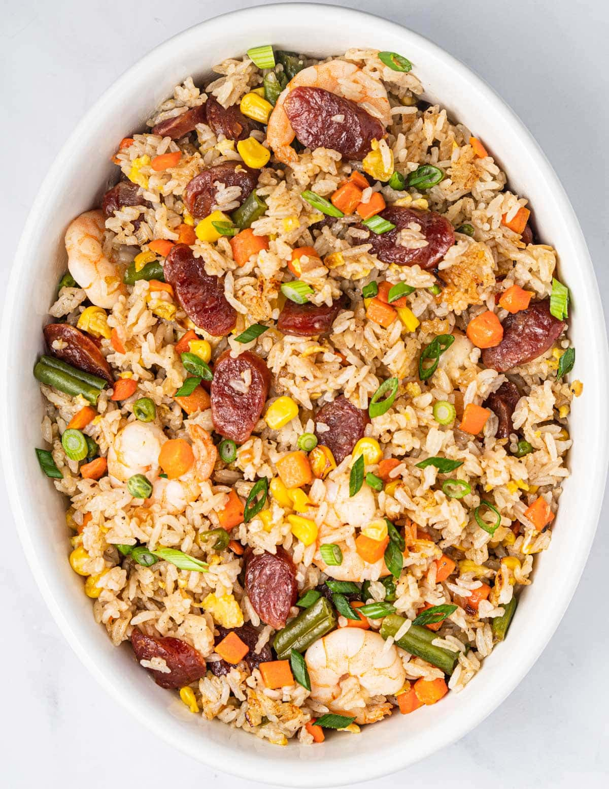

Fried Rice Recipe
Home

Description:
This fried rice recipe will list out all the required
ingredients along with step by step instructions to complete
the recipe.
The result should be a tasty, customizable dish, perfect for
eating right away or storing for the future!.
Ingredients:
- 4 Chinese sausages
- 1/2 pound shrimp
- 1 tablespoon cooking oil
- 1/2 yellow onion (diced)
- 2 garlic cloves (minced)
- 1 pound mixed vegetables (fresh or frozen)
- 1 large egg (beaten)
- 3 cups cooked white rice (preferably day-old and cold)
- 2 teaspoons sesame oil
- 1 teaspoon chicek bouillon powder
- 1/2 teaspoon ground pepper
- 1/2 tablespoon fish sauce
- 1/2 tablespoon soy sauce
- 1 tablespoon oyster sauce
- 1 tablespoon butter
- chopped green onions (for garnish)
Steps:
- Cook the Sausage: In a large wok or skillet over medium
heat, cook the sliced Chinese sausage for 1–2 minutes
per side until lightly browned. Remove and set aside.
Discard excess fat.
- Cook the Shrimp: In the same pan, cook the shrimp until
pink and opaque (about 2–3 minutes). Remove and set
aside. Clean the wok if needed.
- Sauté Aromatics & Veggies: Add 1 tbsp oil. Sauté diced
onion and garlic until fragrant (1 min). Push to the
side and add mixed vegetables. Cook for 2–3 minutes
until just tender.
-
Scramble the Egg: Push veggies aside. Add beaten egg and
scramble until cooked through.
-
Stir Fry Everything: Add cold rice, sausage, shrimp, and
seasonings (sesame oil, bouillon powder, pepper, fish
sauce, soy sauce, oyster sauce, and butter). Stir-fry
everything together until well combined.
-
Get Crispy: Let the rice sit untouched for 2 minutes to
crisp the bottom. Stir and repeat once or twice for that
signature texture.
- Garnish & Serve: Sprinkle with chopped green onions and
serve warm.
Notes:
- Start with cold, cooked rice. For best results, use day-old rice that has been refrigerated overnight, as this will help the rice to get crispy. Freshly cooked rice will result in soggy and sticky fried rice. If you don’t have time to cook rice beforehand, spread freshly cooked rice out on a sheet pan or plate (uncovered) and refrigerate for 30 minutes (or freeze for 10 minutes) until it is thoroughly chilled but not frozen.
- Use butter! This is the secret ingredient that takes normal fried rice to the next level.
- When adding the ingredients, make sure to add them in order of hardness: Begin with the proteins, then add softer vegetables such as carrots and peas, and finally add the cooked rice.
- Let the bottom brown a bit: Once your ingredients have been added, let them cook until they are golden and crispy. Give them a good stir every few minutes to ensure that nothing sticks or burns.
- Finally, season the fried rice with soy sauce and other flavorings of your choosing, such as sesame oil or fish sauce.